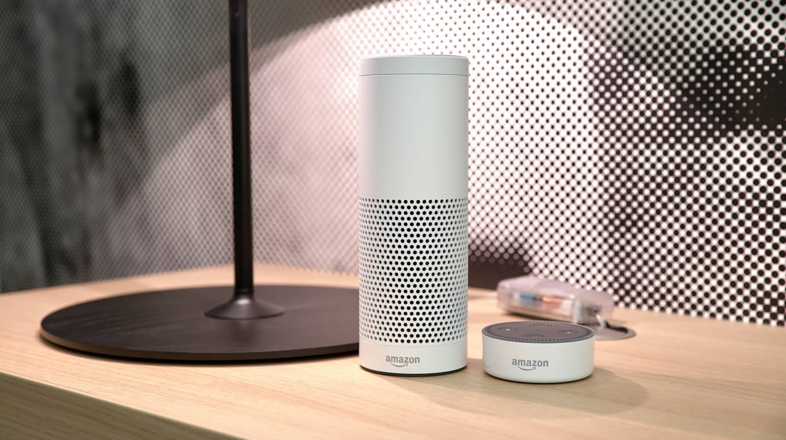

Роботы в быту
Бытовой робот — робот, предназначенный для помощи человеку в повседневной жизни. Уже сегодня можно за достаточно доступные деньги решать повседневные задачи при помощи роботов.
Робот-пылесос
В отличие от всех других домашних роботов, роботы-пылесосы известны, наверное, каждому современному человеку. Первые такие устройства появились несколько лет назад, но до сих пор ученые не перестают обновлять их возможности и характеристики. Дело дошло даже до того, что робот-пылесос способен сам пойти на зарядку, если его аккумулятор будет на исходе.

Что собой представляет робот-пылесос? Фактически, это компактный пылесос, миниатюрное устройство с мощностью всасывания всего лишь в несколько ватт. Разумеется, он не сможет выбить всю пыль из домашнего ковра, но он на это и не рассчитан. Робот-пылесос — это помощник в уборке по дому, который сам, без вмешательства человека (или с минимальным его участием) соберёт лишний мусор, видимую пыль и грязь, чтобы она не летала в воздухе.
Сейчас на рынке уже очень много роботов-пылесосов. Почти каждая компания, которая занимается выпуском бытовой техники, потрудилась и выпустила свою модель.
Мойщики окон
Роботы-мойщики окон - сравнительно молодой вид бытовых устройств, и пока плохо знаком потребителю, в отличие от роботов-пылесосов. На сегодняшний день на рынке есть, как минимум, три бренда роботов для мойки окон.
Голосовые помощники
Основная функция всех смарт-спикеров — персональный помощник: такая "умная колонка" разбудит вас утром, расскажет о последних новостях, погоде и пробках, напомнит о предстоящих встречах и мероприятиях, закажет товары или услуги — Amazon.com, Uber и так далее.
С трудом такие голосовые помощники можно назвать роботами, однако же с уверенностью можно сказать, что за подобными технологиями будущее. Интернет вещей становится все ближе благодаря разработкам Amazon и Google
Умная колонка — девайс, который слышит пользователя, анализирует его речь и пытается выполнить все просьбы владельца. По сути, голосовой помощник из смартфона просто перенесён в корпус колонки, которая ещё и проигрывает музыку, если её попросить.

В перспективе это правда удобно, потому что многие люди не готовы общаться с телефоном, но ничего не имеют против разговоров с отдельным гаджетом, который для этого и предназначен.
К сожалению, конкретно в России данные помощники пока что не столь полезны по причине отсутствия поддержки русского языка.
Google представила домашнего помощника Google Home в мае 2016 года. Это колонка со встроенным голосовым помощником Google Assistant, которая связывается со смартфоном на базе Android и iOS и работает с его помощью.
Google позиционирует Home как универсальное устройство, которое помогает с помощью голоса получать ответы на интересующие пользователя вопросы, а также управлять другими домашними устройствами — например, включать и выключать свет или проигрывать видео на телевизоре с подключенным Chromecast или Android TV.